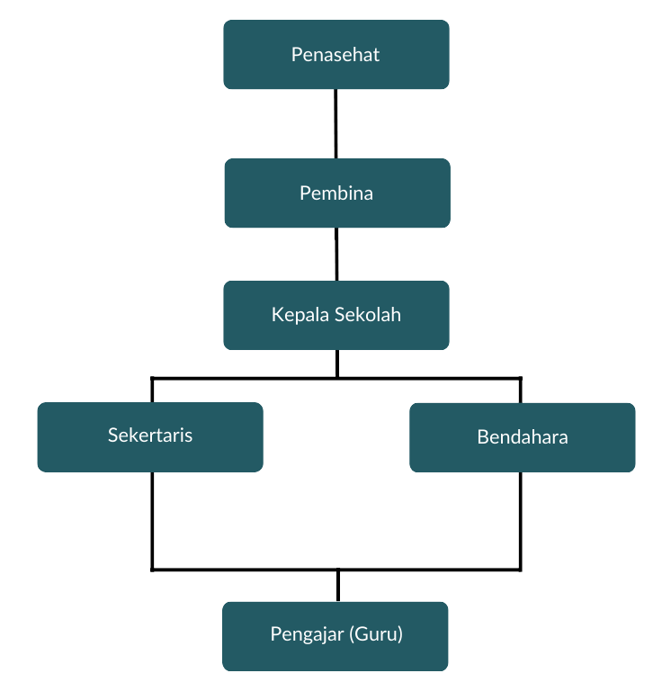

Profile Lembaga Pendidikan Deeniyat
Sejarah
Deeniyat merupakan Program Pembinaan Intensif Pendidikan Agama untuk Anak, Remaja hingga dewasa yang berdurasi 1 Jam setiap hari dengan materi yang disesuaikan kebutuhan, kemampuan dan Psikologis Anak dalam menghafal, menghayati dan mengamalkan ilmunya dalam kehidupan sehari-hari untuk membentuk Karakter Islami.
Metode Deeniyat ini telah diriset, diuji dan dijalankan di tanah air tercinta sejak tahun 2009. Kemudian mulai aktif membentuk Madrasah Deeniyat Percontohan diiringi Sosialisasi dan Publikasi secara berkala di tahun 2011 dibawah Yayasan Deeniyat Nusantara sebagai Pusat Pengembangan Sistem dan Manajemen Madrasah Deeniyat.
Visi
Menjadi Program Diniyah Berstandar nasional yang tersebar di Nusantara
Misi
- Yayasan Nirlaba yang memberikan solusi Pendidikan Agama (Diniyah) pada Anak, Remaja dan Dewasa.
- Pusat Publikasi, Pengembangan Sistem, Manajemen, dan Pengontrolan Pelaksanaan Metode Deeniyat di seluruh Nusantara.
- Memberikan Pelayanan, Support dan Edukasi Pendidikan dan pengembangan mutu Asatidz secara Profesional.
Struktur Organisasi
Keterangan :
- Penasehat
Penasehat terletak di puncak struktur, tugas dan tanggung jawabnya yaitu memberikan nasihat strategis dan bimbingan umum.
- Pembina
Tugas dan tanggung jawab Pembina yaitu mendukung dan mengawasi implementasi kebijakan serta pengembangan sekolah.
- Kepala Sekolah
Tugas dan tanggung jawab seorang kepala sekolah yaitu memimpin dan mengelola seluruh operasional sekolah.
- Sekretaris
Tugas dan tanggung jawab sekretaris yaitu mengelola administrasi dan dokumentasi sekolah.
- Bendahara
Tugas dan tanggung jawab bendahara yaitu Mengelola keuangan sekolah termasuk anggaran, pengeluaran, dan pelaporan keuangan.
- Pengajar
Tugas dan tanggung jawab pengajar (Guru) yaitu melaksanakan kegiatan belajar mengajar dan mendidik siswa, terhubung langsung dengan kepala sekolah dalam operasional harian.